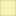

<!doctype html>
<html lang="en">
    <head>
        <meta charset="utf-8">
        <meta http-equiv="X-UA-Compatible" content="IE=edge">
        <meta name="viewport" content="initial-scale=1,user-scalable=no,maximum-scale=1,width=device-width">
        <meta name="mobile-web-app-capable" content="yes">
        <meta name="apple-mobile-web-app-capable" content="yes">
        <link rel="stylesheet" href="css/leaflet.css">
        <link rel="stylesheet" href="css/qgis2web.css">
        <style>
        html, body, #map {
            width: 100%;
            height: 100%;
            padding: 0;
            margin: 0;
        }
        </style>
        <title></title>
    </head>
    <body>
        <div id="map">
        </div>
        <script src="js/qgis2web_expressions.js"></script>
        <script src="js/leaflet.js"></script>
        <script src="js/leaflet.rotatedMarker.js"></script>
        <script src="js/leaflet.pattern.js"></script>
        <script src="js/leaflet-hash.js"></script>
        <script src="js/Autolinker.min.js"></script>
        <script src="js/rbush.min.js"></script>
        <script src="js/labelgun.min.js"></script>
        <script src="js/labels.js"></script>
        <script src="data/Temporarilyoccupiedterritories_0.js"></script>
        <script src="data/TerritoryofAmmalgamedCommunity_1.js"></script>
        <script src="data/LocalGOVinpromisingplan_2.js"></script>
        <script src="data/Promisingplan_3.js"></script>
        <script src="data/Rayonboundary_4.js"></script>
        <script src="data/Oblastboundary_5.js"></script>
        <script src="data/Cityofregionalsignificance_6.js"></script>
        <script>
        var map = L.map('map', {
            zoomControl:true, maxZoom:13, minZoom:2
        }).fitBounds([[48.1860398836,29.6042446737],[51.2041091079,38.293898227]]);
        var hash = new L.Hash(map);
        map.attributionControl.addAttribution('<a href="https://github.com/tomchadwin/qgis2web" target="_blank">qgis2web</a>');
        var bounds_group = new L.featureGroup([]);
        var basemap0 = L.tileLayer('http://{s}.tile.openstreetmap.org/{z}/{x}/{y}.png', {
            attribution: '&copy; <a href="http://openstreetmap.org">OpenStreetMap</a> contributors,<a href="http://creativecommons.org/licenses/by-sa/2.0/">CC-BY-SA</a>',
            maxZoom: 13
        });
        basemap0.addTo(map);
        function setBounds() {
        }
        function pop_Temporarilyoccupiedterritories_0(feature, layer) {
            var popupContent = '<table>\
                    <tr>\
                        <td colspan="2">' + (feature.properties['FID'] !== null ? Autolinker.link(String(feature.properties['FID'])) : '') + '</td>\
                    </tr>\
                </table>';
            layer.bindPopup(popupContent, {maxHeight: 400});
        }

        function style_Temporarilyoccupiedterritories_0_0() {
            return {
                pane: 'pane_Temporarilyoccupiedterritories_0',
                opacity: 1,
                color: 'rgba(0,0,0,0.0)',
                dashArray: '',
                lineCap: 'butt',
                lineJoin: 'miter',
                weight: 1.0, 
                fill: true,
                fillOpacity: 1,
                fillColor: 'rgba(160,160,160,0.454901960784)',
            }
        }
        map.createPane('pane_Temporarilyoccupiedterritories_0');
        map.getPane('pane_Temporarilyoccupiedterritories_0').style.zIndex = 400;
        map.getPane('pane_Temporarilyoccupiedterritories_0').style['mix-blend-mode'] = 'normal';
        var layer_Temporarilyoccupiedterritories_0 = new L.geoJson(json_Temporarilyoccupiedterritories_0, {
            attribution: '<a href=""></a>',
            pane: 'pane_Temporarilyoccupiedterritories_0',
            onEachFeature: pop_Temporarilyoccupiedterritories_0,
            style: style_Temporarilyoccupiedterritories_0_0,
        });
        bounds_group.addLayer(layer_Temporarilyoccupiedterritories_0);
        map.addLayer(layer_Temporarilyoccupiedterritories_0);
        function pop_TerritoryofAmmalgamedCommunity_1(feature, layer) {
        }

        function style_TerritoryofAmmalgamedCommunity_1_0() {
            return {
                pane: 'pane_TerritoryofAmmalgamedCommunity_1',
                opacity: 1,
                color: 'rgba(37,98,188,1.0)',
                dashArray: '',
                lineCap: 'butt',
                lineJoin: 'miter',
                weight: 1.0, 
                fill: true,
                fillOpacity: 1,
                fillColor: 'rgba(115,161,230,0.529411764706)',
            }
        }
        map.createPane('pane_TerritoryofAmmalgamedCommunity_1');
        map.getPane('pane_TerritoryofAmmalgamedCommunity_1').style.zIndex = 401;
        map.getPane('pane_TerritoryofAmmalgamedCommunity_1').style['mix-blend-mode'] = 'normal';
        var layer_TerritoryofAmmalgamedCommunity_1 = new L.geoJson(json_TerritoryofAmmalgamedCommunity_1, {
            attribution: '<a href=""></a>',
            pane: 'pane_TerritoryofAmmalgamedCommunity_1',
            onEachFeature: pop_TerritoryofAmmalgamedCommunity_1,
            style: style_TerritoryofAmmalgamedCommunity_1_0,
        });
        bounds_group.addLayer(layer_TerritoryofAmmalgamedCommunity_1);
        map.addLayer(layer_TerritoryofAmmalgamedCommunity_1);
        function pop_LocalGOVinpromisingplan_2(feature, layer) {
            var popupContent = '<table>\
                    <tr>\
                        <td colspan="2">' + (feature.properties['FID'] !== null ? Autolinker.link(String(feature.properties['FID'])) : '') + '</td>\
                    </tr>\
                </table>';
            layer.bindPopup(popupContent, {maxHeight: 400});
        }

        function style_LocalGOVinpromisingplan_2_0() {
            return {
                pane: 'pane_LocalGOVinpromisingplan_2',
                opacity: 1,
                color: 'rgba(228,136,227,0.690196078431)',
                dashArray: '',
                lineCap: 'square',
                lineJoin: 'bevel',
                weight: 1,
                fillOpacity: 0,
            }
        }
        map.createPane('pane_LocalGOVinpromisingplan_2');
        map.getPane('pane_LocalGOVinpromisingplan_2').style.zIndex = 402;
        map.getPane('pane_LocalGOVinpromisingplan_2').style['mix-blend-mode'] = 'normal';
        var layer_LocalGOVinpromisingplan_2 = new L.geoJson(json_LocalGOVinpromisingplan_2, {
            attribution: '<a href=""></a>',
            pane: 'pane_LocalGOVinpromisingplan_2',
            onEachFeature: pop_LocalGOVinpromisingplan_2,
            style: style_LocalGOVinpromisingplan_2_0,
        });
        bounds_group.addLayer(layer_LocalGOVinpromisingplan_2);
        map.addLayer(layer_LocalGOVinpromisingplan_2);
        function pop_Promisingplan_3(feature, layer) {
            var popupContent = '<table>\
                    <tr>\
                        <th scope="row">name_pp</th>\
                        <td>' + (feature.properties['name_pp'] !== null ? Autolinker.link(String(feature.properties['name_pp'])) : '') + '</td>\
                    </tr>\
                </table>';
            layer.bindPopup(popupContent, {maxHeight: 400});
        }

        function style_Promisingplan_3_0() {
            return {
                pane: 'pane_Promisingplan_3',
                opacity: 1,
                color: 'rgba(74,68,0,1.0)',
                dashArray: '',
                lineCap: 'butt',
                lineJoin: 'miter',
                weight: 1, 
                fill: true,
                fillOpacity: 1,
                fillColor: 'rgba(236,230,100,0.454901960784)',
            }
        }
        map.createPane('pane_Promisingplan_3');
        map.getPane('pane_Promisingplan_3').style.zIndex = 403;
        map.getPane('pane_Promisingplan_3').style['mix-blend-mode'] = 'normal';
        var layer_Promisingplan_3 = new L.geoJson(json_Promisingplan_3, {
            attribution: '<a href=""></a>',
            pane: 'pane_Promisingplan_3',
            onEachFeature: pop_Promisingplan_3,
            style: style_Promisingplan_3_0,
        });
        bounds_group.addLayer(layer_Promisingplan_3);
        map.addLayer(layer_Promisingplan_3);
        function pop_Rayonboundary_4(feature, layer) {
        }

        function style_Rayonboundary_4_0() {
            return {
                pane: 'pane_Rayonboundary_4',
                opacity: 1,
                color: 'rgba(169,125,135,1.0)',
                dashArray: '',
                lineCap: 'square',
                lineJoin: 'bevel',
                weight: 1.0,
                fillOpacity: 0,
            }
        }
        map.createPane('pane_Rayonboundary_4');
        map.getPane('pane_Rayonboundary_4').style.zIndex = 404;
        map.getPane('pane_Rayonboundary_4').style['mix-blend-mode'] = 'normal';
        var layer_Rayonboundary_4 = new L.geoJson(json_Rayonboundary_4, {
            attribution: '<a href=""></a>',
            pane: 'pane_Rayonboundary_4',
            onEachFeature: pop_Rayonboundary_4,
            style: style_Rayonboundary_4_0,
        });
        bounds_group.addLayer(layer_Rayonboundary_4);
        map.addLayer(layer_Rayonboundary_4);
        function pop_Oblastboundary_5(feature, layer) {
        }

        function style_Oblastboundary_5_0() {
            return {
                pane: 'pane_Oblastboundary_5',
                opacity: 1,
                color: 'rgba(227,106,101,1.0)',
                dashArray: '',
                lineCap: 'square',
                lineJoin: 'bevel',
                weight: 2.0,
                fillOpacity: 0,
            }
        }
        map.createPane('pane_Oblastboundary_5');
        map.getPane('pane_Oblastboundary_5').style.zIndex = 405;
        map.getPane('pane_Oblastboundary_5').style['mix-blend-mode'] = 'normal';
        var layer_Oblastboundary_5 = new L.geoJson(json_Oblastboundary_5, {
            attribution: '<a href=""></a>',
            pane: 'pane_Oblastboundary_5',
            onEachFeature: pop_Oblastboundary_5,
            style: style_Oblastboundary_5_0,
        });
        bounds_group.addLayer(layer_Oblastboundary_5);
        map.addLayer(layer_Oblastboundary_5);
        function pop_Cityofregionalsignificance_6(feature, layer) {
            var popupContent = '<table>\
                    <tr>\
                        <th scope="row">name_city</th>\
                        <td>' + (feature.properties['name_city'] !== null ? Autolinker.link(String(feature.properties['name_city'])) : '') + '</td>\
                    </tr>\
                    <tr>\
                        <th scope="row">variant</th>\
                        <td>' + (feature.properties['variant'] !== null ? Autolinker.link(String(feature.properties['variant'])) : '') + '</td>\
                    </tr>\
                </table>';
            layer.bindPopup(popupContent, {maxHeight: 400});
        }

        function style_Cityofregionalsignificance_6_0(feature) {
            switch(String(feature.properties['variant'])) {
                case '1':
                    return {
                pane: 'pane_Cityofregionalsignificance_6',
                radius: 6.0,
                opacity: 1,
                color: 'rgba(0,0,0,1.0)',
                dashArray: '',
                lineCap: 'butt',
                lineJoin: 'miter',
                weight: 1,
                fill: true,
                fillOpacity: 1,
                fillColor: 'rgba(0,199,30,1.0)',
            }
                    break;
                case '2':
                    return {
                pane: 'pane_Cityofregionalsignificance_6',
                radius: 6.0,
                opacity: 1,
                color: 'rgba(0,0,0,1.0)',
                dashArray: '',
                lineCap: 'butt',
                lineJoin: 'miter',
                weight: 1,
                fill: true,
                fillOpacity: 1,
                fillColor: 'rgba(255,233,33,1.0)',
            }
                    break;
                case '3':
                    return {
                pane: 'pane_Cityofregionalsignificance_6',
                radius: 6.0,
                opacity: 1,
                color: 'rgba(0,0,0,1.0)',
                dashArray: '',
                lineCap: 'butt',
                lineJoin: 'miter',
                weight: 1,
                fill: true,
                fillOpacity: 1,
                fillColor: 'rgba(229,112,112,1.0)',
            }
                    break;
                case '4':
                    return {
                pane: 'pane_Cityofregionalsignificance_6',
                radius: 6.0,
                opacity: 1,
                color: 'rgba(0,0,0,1.0)',
                dashArray: '',
                lineCap: 'butt',
                lineJoin: 'miter',
                weight: 1,
                fill: true,
                fillOpacity: 1,
                fillColor: 'rgba(167,11,11,1.0)',
            }
                    break;
            }
        }
        map.createPane('pane_Cityofregionalsignificance_6');
        map.getPane('pane_Cityofregionalsignificance_6').style.zIndex = 406;
        map.getPane('pane_Cityofregionalsignificance_6').style['mix-blend-mode'] = 'normal';
        var layer_Cityofregionalsignificance_6 = new L.geoJson(json_Cityofregionalsignificance_6, {
            attribution: '<a href=""></a>',
            pane: 'pane_Cityofregionalsignificance_6',
            onEachFeature: pop_Cityofregionalsignificance_6,
            pointToLayer: function (feature, latlng) {
                var context = {
                    feature: feature,
                    variables: {}
                };
                return L.circleMarker(latlng, style_Cityofregionalsignificance_6_0(feature));
            },
        });
        bounds_group.addLayer(layer_Cityofregionalsignificance_6);
        map.addLayer(layer_Cityofregionalsignificance_6);
        var baseMaps = {};
        L.control.layers(baseMaps,{'City of regional significance<br /><table><tr><td style="text-align: center;"></td><td>Variant 1</td></tr><tr><td style="text-align: center;"></td><td>Variant 2</td></tr><tr><td style="text-align: center;"></td><td>Variant 3</td></tr><tr><td style="text-align: center;"></td><td>Variant 4</td></tr></table>': layer_Cityofregionalsignificance_6,' Oblast boundary': layer_Oblastboundary_5,' Rayon boundary': layer_Rayonboundary_4,' Promising plan': layer_Promisingplan_3,' Local GOV in promising plan': layer_LocalGOVinpromisingplan_2,' Territory of Ammalgamed Community': layer_TerritoryofAmmalgamedCommunity_1,' Temporarily occupied territories': layer_Temporarilyoccupiedterritories_0,},{collapsed:false}).addTo(map);
        setBounds();
        </script>
    </body>
</html>
